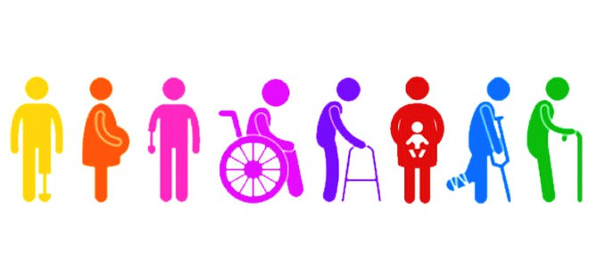
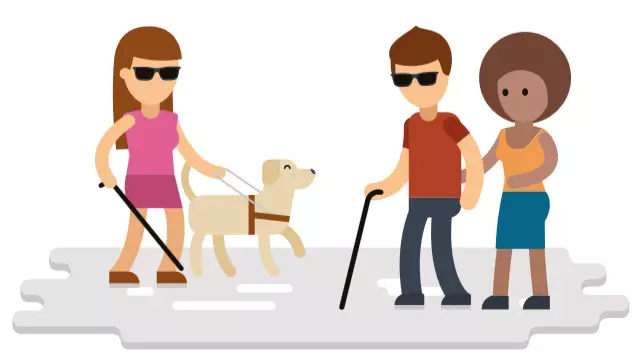
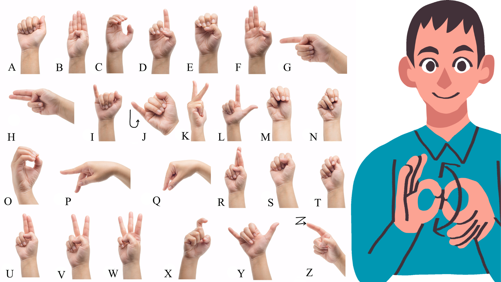
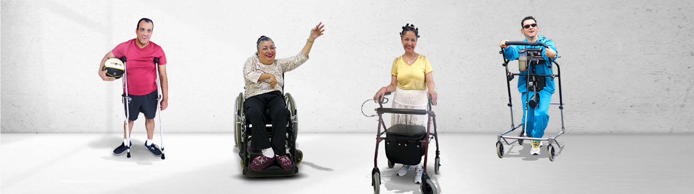
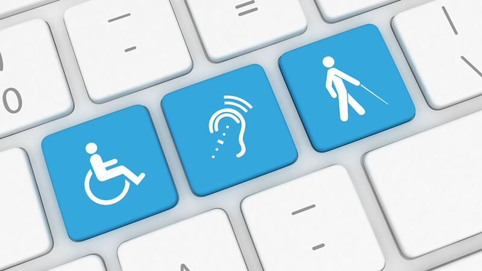

Página Inicial
Bem-vindo ao Inclusão em Foco, um blog institucional criado para informar, conscientizar e promover a inclusão de pessoas com dificuldade visual, auditiva ou de locomoção.
O site tem como objetivo apoiar instituições, escolas, empresas e órgãos públicos, oferecendo conteúdos educativos e boas práticas de acessibilidade.
Inclusão não é favor. É direito.
Promover a inclusão é garantir dignidade, respeito e igualdade de oportunidades. Quando ambientes são pensados para todos, a sociedade se torna mais justa, humana e participativa.

👁️ Pessoas com Dificuldade Visual
Pessoas com deficiência visual podem apresentar baixa visão ou cegueira total. A acessibilidade garante autonomia e igualdade de acesso à informação.
O uso de tecnologias assistivas, como leitores de tela e ampliadores de texto, possibilita maior independência no acesso a conteúdos educacionais, digitais e institucionais.
Principais necessidades:
- Textos com fonte ampliada e bom contraste
- Uso de leitores de tela
- Descrições em imagens (texto alternativo)
- Ambientes bem sinalizados
Como a instituição pode ajudar:
- Sites compatíveis com leitores de tela
- Materiais em áudio ou braile
- Iluminação adequada e sinalização tátil

👂 Pessoas com Dificuldade Auditiva
A deficiência auditiva pode variar de leve a profunda. A comunicação acessível é essencial para garantir inclusão.
Recursos como legendas, Libras e comunicação visual clara fortalecem a participação social, educacional e profissional das pessoas surdas.
Principais necessidades:
- Comunicação visual clara
- Legendas em vídeos
- Intérprete de Libras quando possível
Como a instituição pode ajudar:
- Vídeos legendados
- Atendimento por texto ou chat
- Linguagem simples e objetiva

♿ Pessoas com Dificuldade de Locomoção
Inclui pessoas que utilizam cadeira de rodas, muletas, próteses ou possuem mobilidade reduzida.
A acessibilidade física é um direito garantido por lei e fundamental para assegurar autonomia, segurança e qualidade de vida.
Principais necessidades:
- Acesso físico seguro
- Autonomia de deslocamento
- Ambientes adaptados
Como a instituição pode ajudar:
- Rampas e corrimãos
- Banheiros acessíveis
- Portas e corredores adequados

💻 Acessibilidade Digital
Além do espaço físico, o ambiente digital também deve ser acessível para garantir a participação de todos.
Sites acessíveis seguem princípios como clareza, organização, contraste adequado e navegação por teclado, promovendo inclusão digital.
- Navegação simples
- Compatibilidade com teclado
- Textos claros e organizados
- Cores acessíveis
Um site acessível permite que todos participem da sociedade digital.
📬 Contato Institucional
O Inclusão em Foco está aberto ao diálogo com instituições, educadores, estudantes e organizações interessadas em promover acessibilidade.
Email: contato@inclusaoemfoco.org
Atendimento acessível para todos.